전자산업기사 (2013-03-10 기출문제)
1과목: 전자회로
1. 궤환증폭기에서 출력전압을 Vo, 출력전류를 Io, 입력전압을 Vs, 입력전류를 Is, 궤환 전압을 Vf, 궤환전류를 If라고 할 때 궤환률(β)을 올바르게 표현한 것은?
- 직렬-전류 궤환회로의 β는 Vf/Vo이다.
- 직렬-전압 궤환회로의 β는 Vo/If이다.
- 병렬-전압 궤환회로의 β는 Vf/Vo이다.
- 병렬-전류 궤환회로의 β는 Io/If이다.
(정답률: 63%)

2. 다음과 같은 연산증폭기 회로의 출력으로 적합한 것은?
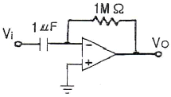
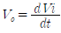
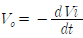
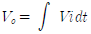
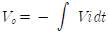
(정답률: 86%)
3. 다음 FET 증폭회로의 전압증폭도는 약 얼마인가? (단, μ=500, rd=100[kΩ]이다.)
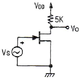
- -15
- -24
- -32
- -45
(정답률: 72%)
4. 교차 일그러짐(crossover distortion) 현상은 어느 증폭기에서 발생하는가?
- A급 증폭기
- AB급 증폭기
- B급 증폭기
- A, B 및 AB급 증폭기 모두 교차 일그러짐 현상이 발생한다.
(정답률: 82%)
5. 그림과 같은 회로에서 RL에 4[mA] 전류를 흘려주려고 한다. RL 값은?
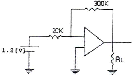
- 2.5[kΩ]
- 4.5[kΩ]
- 3.5[kΩ]
- 5.5[kΩ]
(정답률: 78%)
6. 궤환이 걸리지 않을 때의 증폭회로의 전압이득을 A, 궤환율을 β라 할 때 발진조건은?
- Aβ < 1
- A = -β
- Aβ ≥ 1
- A = β
(정답률: 81%)
7. 다음 중 SSB 검파기로 사용되지 않는 것은?
- 비 검파기
- 링 검파기
- 승적 검파기
- 싱크로다인 검파기
(정답률: 76%)
8. 펄스 부호 변조 방식에 대한 설명으로 옳은 것은?
- 샘플-홀드(sample-hole) 회로를 이용한다.
- 신호파의 진폭을 양자화하여 2진법으로 표현하는 방식이다.
- 펄스의 주기, 폭은 일정하고 진폭을 입력신호 전압에 따라 변화시키는 방식이다.
- 신호 레벨의 증감을 Δ만큼 변화되는 계단파에 근사시키고 그것을 음양의 펄스로 변화시킨다.
(정답률: 74%)
9. 전류 증폭률 α와 β에 대한 관계식으로 옳지 않은 것은?
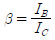
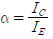
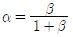
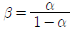
(정답률: 66%)
10. α=0.98, ICD=20[μA]의 값을 가지는 트랜지스터를 이미터 접지로 하면 컬렉터 차단전류 ICEO는 몇 [μA]로 되는가?
- 19.6[μA]
- 20[μA]
- 980[μA]
- 1000[μA]
(정답률: 55%)
11. 그림과 같은 발진회로에 관한 설명 중 옳은 것은?
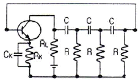
- C와 R을 사용하여 부궤환으로 발진시킨 것이다.
- 다이나트론에 의한 부성저항과 C로 발진시킨 것이다.
- 발진을 계속하기 위해서는 증폭도가 29 이상이 되어야 한다.
- 컬렉터의 LC 동조회로를 C 및 R로 베이스 결합한 것이다.
(정답률: 74%)
12. 다음 회로에서 Zener에 인가되는 전압은 몇 [V]인가? (단, Vo = -10.3[V]이다.)
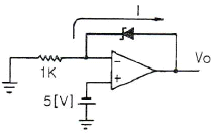
- -4.3[V]
- -5.3[V]
- -15.3[V]
- 9.3[V]
(정답률: 79%)
13. 다음 중 상보대칭(complementary symmetry) SEPP 회로의 장점은?
- 같은 크기의 부하일 경우 DEPP보다 출력이 크다.
- 단전원 방식일 경우 DEPP보다 컬렉터 공급 전원이 높다.
- 위상 반전 회로가 불필요하다.
- 입력 회로가 복잡하지 않다.
(정답률: 70%)
14. 다음 회로는 어떤 목적에 이용될 수 있는가?
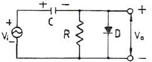
- 클램핑(Clamping)
- 클리핑(Clipping)
- 정류기(Rectifier)
- 변조(Modulation)
(정답률: 87%)
15. 단일 증폭기와 비교한 B급 푸시풀 증폭기의 특징으로 적합하지 않은 것은?
- 효율이 더 높다.
- 더 큰 출력을 얻는다.
- 전원의 맥동에 의한 잡음이 제거된다.
- 기수 고조파에 의한 일그러짐이 감소된다.
(정답률: 69%)
16. 직ㆍ병렬저항 RC 이상형 발진회로의 발진주파수로 옳은 것은?
- 직렬저항 RC 이상형 발진회로의 발진주파수 :
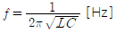
- 직렬저항 RC 이상형 발진회로의 발진주파수 :
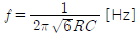
- 병렬저항 RC 이상형 발진회로의 발진주파수 :
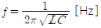
- 병렬저항 RC 이상형 발진회로의 발진주파수 :
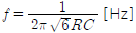
(정답률: 69%)
17. 다음 회로의 파형으로 옳은 것은?
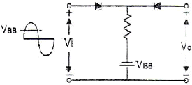
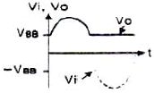
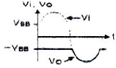
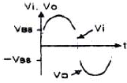
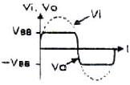
(정답률: 85%)
18. 전압이득이 40[dB]인 저주파 증폭기에서 출력신호의 왜율이 10[%]일 때 이를 1[%]로 개선하기 위해서는 부궤환율(β)은 얼마로 하여야 하는가?
- 0.01
- 0.03
- 0.⑤
- 0.09
(정답률: 72%)
19. 다음 중 신호의 일그러짐이 가장 적고 안정한 증폭기는?
- A급
- B급
- C급
- AB급
(정답률: 82%)
20. 여러 개의 신호들을 조합하여 하나의 신호를 선택하는 것은?
- 레지스터
- 버퍼
- 라인 트랜시버
- 디멀티플렉서
(정답률: 87%)
2과목: 전기자기학 및 회로이론
21. 다음 중 도체의 고유저항과 관계없는 것은?
- 온도
- 길이
- 단면적
- 단면적의 모양
(정답률: 77%)
22. 맥스웰(Maxwell) 방정식 중 잘못된 것은?
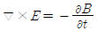
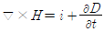
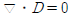
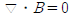
(정답률: 67%)
23. 분극 P, 전속밀도 D, 전계 E, 유전율 ε 사이의 관계를 옳게 나타낸 식은?
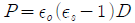
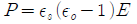
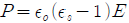
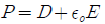
(정답률: 59%)
24. v[m/s]의 속도를 가진 전자가 B[Wb/m2]의 평등자계에 직각으로 들어가면 원운동을 한다. 이때 원운동의 주기는? (단, 원의 반지름은 r[m], 전자의 전하를 e[C], 질량을 m[kg]이라 한다.)
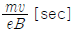
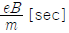
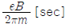
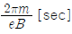
(정답률: 55%)
25. 전계 E[V/m]내의 한 점에 q[C]의 점전하를 놓을 때, 이 전하에 작용하는 힘은 몇 [N]인가?
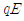
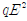
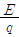
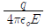
(정답률: 73%)
26. 강자성체의 자화의 세기 J와 자화력 H 사이의 관계는?
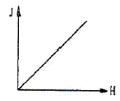
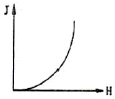
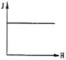
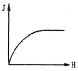
(정답률: 76%)
27. 어떤 자기회로에서 자기인덕턴스는 권회수의 몇 승에 비례하는가?
- 1/2
- 1
- 2
- 3
(정답률: 72%)
28. 정전용량이 C인 콘덴서에서 극판사이의 비유전율이 2인 유전체를 제거하고 공기로 채운 경우 그 때의 용량을 Co라고 하면 , C와 Co의 관계는?
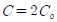
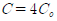
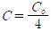
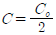
(정답률: 73%)
29. 길이 1[cm]마다 권수가 50인 무한장 솔레노이드에 500[mA]의 전류를 흘릴 때 내부의 자계는 몇 [AT/m]인가?
- 1250[AT/m]
- 2500[AT/m]
- 12500[AT/m]
- 25000[AT/m]
(정답률: 63%)
30. 공기 중에서 두 개의 단위 점전하 +1[C]이 1[m]거리에 놓여 있을 때 작용하는 힘의 크기와 작용하는 힘은?
- 9×109 [N], 흡인력
- 9×109 [N], 반발력
- 9×10-9 [N], 흡인력
- 9×10-9 [N], 반발력
(정답률: 60%)
31. 복소수 전압
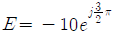
[V]를 정현파의 순시식으로 나타내면?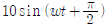
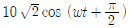
(정답률: 64%)
32. 어떤 4단자망의 입력 단자 사이의 영상 임피던스 Z01과 출력 단자 사이의 영상 임피던스 Z02가 같게 되려면 4단자 정수 사이에 어떠한 관계가 있어야 하는가?
- B = C
- A = D
- AB = CD
- AD = BC
(정답률: 64%)
33. 그림과 같은 이상 변압기에서 1차 전압 V1=100[V]일 때, 2차 전압 V2=12[V]가 되도록 1차 코일 수를 n1=200회로 하였다. 2차 코일 수 n2는 몇 회로 하면 되는가?
- 10
- 12
- 20
- 24
(정답률: 76%)
34. 의 라플라스 변환은?
(정답률: 67%)
35. 그림과 같은 이상변압기에서 Ri=100[Ω], RL=400[Ω]일 때 권선비 n1:n2는 얼마인가?
- 1:2
- 1:4
- 2:1
- 4:1
(정답률: 62%)
36. ABCD 전송 파라미터에서 단락 역방향 전류이득을 나타내는 파라미터는?
- A
- B
- C
- D
(정답률: 71%)
37. R-L 직렬회로의 시정수는?
- RL
- 1/(RL)
- R/L
- L/R
(정답률: 71%)
38. 다음 회로에서 20[Ω] 저항에 흐르는 전류는?
- 0[A]
- 0.4[A]
- 0.6[A]
- 4[A]
(정답률: 67%)
39. F(s)=1의 역라플라스 변환 f(t)는?
- 1
- U(t)
- δ(t)
- t
(정답률: 84%)
40. 콘덴서 양단에 걸리는 전압은 회로에 흐르는 전류를 기준으로 어느 정도의 위상을 갖는가?
- 90°
- -90°
- 180°
- -180°
(정답률: 68%)
3과목: 전자계산기일반
41. EBCDIC 코드는 16진수 몇 자리로 1문자를 표현할 수 있는가?
- 1
- 2
- 4
- 8
(정답률: 62%)
42. 어떤 디스크팩이 8매로 되어 있다. 1면에는 200개의 트랙을 사용할 수 있다고 하면 사용 가능한 실린더는 몇 개가 되는가?
- 100
- 200
- 1600
- 3200
(정답률: 72%)
43. 입출력 동작이 시작되어 끝날 때까지의 하나의 입출력 장치가 전용으로 쓸 수 있는 채널로서 고속장치에 주로 쓰이는 채널은?
- Selector Channel
- Multiplexer Channel
- Block Multiplexer Channel
- DMA
(정답률: 65%)
44. 다음 중 설명이 잘못된 것은?
- 어셈블러(assembler)는 어셈블리 언어로 된 프로그램을 기계어로 번역한다.
- 컴파일러(compiler)는 저급 언어의 원시 프로그램을 목적 프로그램으로 변환한다.
- 인터프리터(interpreter)는 고급 언어로 기술된 원시 프로그램의 문장을 하나씩 읽어내어 바로 실행 처리한다.
- 크로스 컴파일러(cross compiler)는 한 컴퓨터에서 다른 컴퓨터의 목적 프로그램을 만들어내는 번역기이다.
(정답률: 62%)
45. 묵시적 주소지정 방식에서 산술 연산을 실행하는데 사용되는 레지스터는?
- 누산기
- 데이터 레지스터
- 주소 레지스터
- 인덱스 레지스터
(정답률: 80%)
46. 어셈블리 언어로 프로그램을 작성할 때 절대번지 대신에 간단한 기호 명칭을 사용할 수 있는데 이러한 번지를 무엇이라 하는가?
- 자기 번지(self address)
- 기호 번지(symbolic address)
- 상대 번지(relative address)
- 기호 상대 번지(symbolic relative address)
(정답률: 70%)
47. -25를 2의 보수 형태 2진수로 나타내어 다시 이를 왼쪽으로 1비트만큼 산술 이동했을 때의 값은?
- 11100110
- 11001110
- 11100111
- 11001111
(정답률: 64%)
48. 인터럽트(interrupt)에 관한 설명으로 틀린 것은?
- 내부 혹은 외부장치로부터 요구되는 우선 서비스 요청이다.
- 주로 소프트웨어, 하드웨어의 원인에 의해서 발생된다.
- PSW(Program Status Word)와는 관계없다.
- 고정소수점 연산의 오버플로우(Overflow) 발생 때 발생한다.
(정답률: 76%)
49. 컴퓨터 연산에서 보수(Complement)를 사용하는 목적으로 가장 적합한 것은?
- 가산기를 이용하여 감산을 하기 위하여
- 연산 속도를 줄이기 위하여
- 감산 연산을 할 수가 없기 때문에
- 논리 연산의 게이트 수를 줄이기 위하여
(정답률: 73%)
50. 명령어의 번지부가 지정한 기억장소의 내용을 실제 데이터가 들어있는 번지로 하는 주소지정방식은?
- 간접 주소지정방식
- 직접 주소지정방식
- 상대 주소지정방식
- 인덱스 주소지정방식
(정답률: 53%)
51. 복잡한 계산이나 수식의 처리에 적합하여 과학 기술 계산용으로 쓰이는 언어는?
- BASIC 언어
- COBOL 언어
- PASCAL 언어
- FORTRAN 언어
(정답률: 66%)
52. 프로그램 카운터(program counter)는 다음에 실행해야 할 프로그램 명령의 어떤 것을 유지하는가?
- 클록(Clock)
- 주소(Address)
- 동작(Operation)
- 상태(Atatus)
(정답률: 73%)
53. 다음 논리 연산 중 이항(binary) 연산에 해당되는 것은?
- Move
- Complement
- Shift
- AND
(정답률: 76%)
54. 인터럽트 발생 요인이 아닌 것은?
- 컴퓨터 조작원의 의도적인 행위
- 프로그램 상의 문제 발생
- 입출력 처리 요청
- 서브루틴 요청
(정답률: 68%)
55. 컴퓨터의 입출력 및 처리 속도를 향상시키기 위한 목적과 관계없는 것은?
- DMA(Direct Memory Access)
- CAM(Content Addressable Memory)
- Cache Memory
- PLA(Programmable Logic Array)
(정답률: 65%)
56. 마이크로컴퓨터의 기본적 내부 구조를 가장 올바르게 표시한 것은?
- 주기억 장치, 연산 장치
- 연산 장치, 제어 장치
- 제어 장치, 주기억 장치
- 주기억 장치, 중앙처리 장치
(정답률: 63%)
57. 마이크로프로세서 구성 요소들을 기능별로 분류한 것 중 옳지 않은 것은?
- ROM, RAM은 반드시 별도의 칩으로 구성해야 한다.
- 마이크로프로세서 칩은 중앙처리장치와 동등한 역할을 한다.
- ROM, RAM 칩은 필요에 따라 적절한 기억장소의 크기를 선택할 수 있다.
- 인터페이스는 CPU와 많은 종류의 입출력 장치들과의 접속을 수행한다.
(정답률: 77%)
58. 데이터 전송 명령에 속하지 않는 것은?
- LOAD
- STORE
- MOVE
- AND
(정답률: 79%)
59. 프로그램 언어로 프로그램을 작성하는 것을 무엇이라 하는가?
- Debugging
- Flowchart
- Coding
- Execute
(정답률: 83%)
60. 에러(error)의 발생을 검출하고 교정을 할 수 있는 코드는?
- BCD Code
- ASCII Code
- Hamming Code
- Excess-3 Code
(정답률: 84%)
4과목: 전자계측
61. 내부저항이 10[kΩ]인 전압계에 측정범위를 5배로 하기 위한 배율저항 R의 값은?
- 2.5[kΩ]
- 30[kΩ]
- 40[kΩ]
- 50[kΩ]
(정답률: 69%)
62. 디지털 전압계의 원리는 다음 중 어느 것과 가장 유사한가?
- D/A 변환기
- A/D 변환기
- 클록 발진기
- 계수기
(정답률: 84%)
63. 다음 중 오실로스코프로 측정할 수 없는 것은?
- 전압
- 위상
- 주파수
- 코일의 Q
(정답률: 82%)
64. 100[Ω] 정도의 중저항 측정에 가장 알맞은 측정 방법은?
- 전위차계법
- 맥스웰 브리지
- 휘스톤 브리지법
- 캘빈더블 브리지법
(정답률: 69%)
65. 펄스 발생기와 구형파 발생기의 근본적인 차이점은 사용률(duty cycle)에 있다. 여기서 사용률을 나타낸 것은?
- 사용률=하강시간/상승시간
- 사용률=펄스폭/펄스주기
- 사용률=상승시간/펄스주기
- 사용률=하강시간/펄스폭
(정답률: 79%)
66. 브라운관상에 나타난 변조파형의 최소치 B를 2[mm]라 하고 변조도를 90[%]로 하기 위해서는 최대치 A를 몇 [mm]로 하면 되는가?
- 35[mm]
- 38[mm]
- 40[mm]
- 42[mm]
(정답률: 66%)
67. 계수형 주파수계로 피측정 주파수의 주기를 측정한 결과 16.77[ms]이었다면 피측정 주파수는 약 얼마인가?
- 20[Hz]
- 60[Hz]
- 80[Hz]
- 100[Hz]
(정답률: 68%)
68. 직류전압계를 사용하여 동작중인 회로의 질류전압을 측정하고자 한다. 이때 사용되는 직류전압계는 다음 중 어떠한 조건을 갖고 있으면 좋겠는가?
- 내부저항이 가급적 클수록 좋다.
- 내부저항이 가급적 작을수록 좋다.
- 계기의 측정오차 범위가 지정되어 있으므로 내부저항은 별로 상관없다.
- 직류 전압만 측정하면 되므로 전압계의 내부 정전 용량의 대소에는 상관이 없다.
(정답률: 66%)
69. 단상 교류 전력을 측정하기 위한 방법이 아닌 것은?
- 3 전류계법
- 3 전압계법
- 단상 전류계법
- 3 전력계법
(정답률: 78%)
70. 균등 눈금을 사용하는 것은?
- 전류력계형 전류계
- 전류력계형 역률계
- 전류력계형 전압계
- 전류력계형 전력계
(정답률: 55%)
71. 다음 중 열전형 계기의 표피 오차 방지책은?
- 고주파를 사용
- 미세열선 사용
- 미소전류 사용
- 초크코일 사용
(정답률: 77%)
72. 오실로스코프의 sweep time/cm가 1[ms/cm]이고 그림과 같이 a와 b의 간격이 4[cm]이었다면 주기 T는 몇 [ms]인가?
- T=1/4 [ms]
- T=1/2 [ms]
- T=4 [ms]
- T=2 [ms]
(정답률: 71%)
73. 참값을 T, 측정값을 M이라고 할 때 보정(α)을 나타내는 식은?
- α=T-M
- =M-T
- α=(T-M)/M
- α=(T-M)/T
(정답률: 69%)
74. 비트(beat) 발진기의 계통도에서 고정 발진기의 주파수를 100[kHz]로 선정한다면 빈칸의 회로는?
- 저주파 발진기
- 신호 감쇠기
- 고역 여파기
- 저역 여파기
(정답률: 65%)
75. 증폭기의 왜율 측정에 해당되지 않는 것은?
- 감쇠기 법
- 공진 Bridge 법
- 필터 법
- 왜율계
(정답률: 63%)
76. 다음 그림과 같은 Bridge의 평형 조건은?
- C1R2 = C2R1
- C1C2 = R2R1
- C1R1 = C2R2
- C1C2R1R2 = 1
(정답률: 64%)
77. 열전대형 계기에서 도선의 인덕턴스와 표유용량에 의해 발생되는 오차는?
- 공진오차
- 배분오차
- 전위오차
- 표피효과오차
(정답률: 61%)
78. 정전용량이나 유전체 손실각을 측정하는 브리지는?
- 윈 브리지
- 공진 브리지
- 셰링 브리지
- 캠벨 브리지
(정답률: 73%)
79. 다음 중 지시계기의 구비 조건으로 옳지 않은 것은?
- 정확도가 높고, 오차가 적을 것
- 눈금이 균등하거나 대수 눈금일 것
- 구조가 튼튼하고, 취급하기가 편리할 것
- 응답도(responsibility)가 낮을 것
(정답률: 74%)
80. 마이크로파 측정에서 정재파비가 2일 때 반사계수는?
- 1/2
- 1/3
- 1/4
- 1/5
(정답률: 69%)
궤환회로에서 궤환률(β)은 출력신호와 피드백신호의 비율을 나타내는데, 직렬-전류 궤환회로에서는 출력신호인 출력전류(Io)와 피드백신호인 궤환전류(If)가 직렬로 연결되어 있으므로, 궤환전압(Vf)은 출력전압(Vo)와 같다. 따라서 궤환률은 Vf/Vo으로 표현할 수 있다.